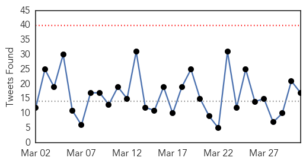
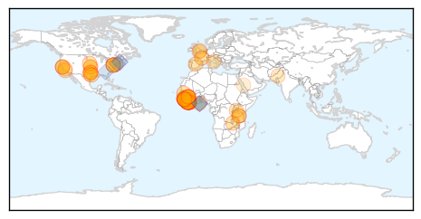
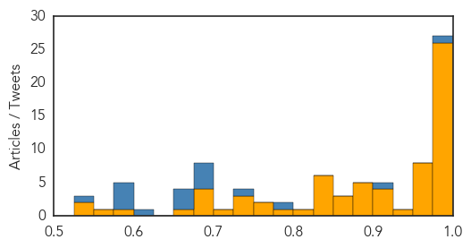
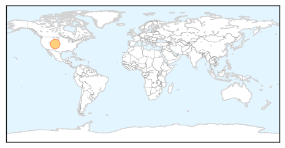

Ebola
30-Day Web Trend
0 alerts, 0 warnings
30-Day Twitter Trend
0 alerts, 0 warnings

Article Locations
Article Confidences
Top Articles:
- 1.000
- WHOs Medical Detectives Work With Health Authorities to Solve a Mystery
- 1.000
- Health authorities report 3 new Ebola cases in Liberia, previously declared Ebola free
- 1.000
- Spike in Ebola in Guinea could reflect access to hidden patients
- 0.999
- Unprotected sex suspected in Liberia's latest Ebola death
- 0.999
- Exclusive: Guinea says Ebola patients sent home after botched blood tests
- 0.998
- Safari Travelers Safe to Visit Tanzania (East Africa)
- 0.998
- Ebola updates from the NIH and Nebraska
- 0.996
- Ebola on the rampage again
- 0.996
- In Ebola nightmare, deadly delays
- 0.996
- The Ebola Hype: Safari Travelers Safe to Visit Tanzania (East Africa)
- 0.996
- Fresh cases of ebola spark new concerns of potential outbreak 31/03/2015
- 0.993
- Cuban Ebola responders depart Sierra Leone
- 0.993
- CDC Press Release-Ebola in West Africa: The Importance of “Getting to Zero”
- 0.991
- Guinea Finds 3 Ebola Cases in Alumina Hub of Fria
- 0.991
- Guinea shuts border with Sierra Leone in effort to end Ebola
- 0.990
- 3 West African Countries Increase Fight to End Ebola
- 0.987
- 'WHO should have been fighting the virus, not MSF'
- 0.987
- Guinea finds 3 Ebola cases in the alumina hub of Fria
- 0.984
- Guinea shuts border with Sierra Leone in effort to end Ebola
- 0.980
- Shooting at NSA headquarters in Maryland: one dead, one badly injured
- 0.980
- Maryland attorney general opposes offshore drilling plan
- 0.980
- Colon cancer patient fights to support others
- 0.979
- Government commends Ghanaian medical volunteers
- 0.979
- Three-Day Curfew in Sierra Leone Comes to an End
- 0.977
- Guinea shuts border with Sierra Leone in effort to end Ebola
- 0.977
- Get-to-zero Ebola Campaign Underway in Sierra Leone - Sierra Leone
- 0.972
- African Union calls for universal BWC acceptance
- 0.971
- Tulane/Lassa Fever Programme hands over Rehabilitated Annex Ward to Ministry of Health
- 0.966
- Tulane/Lassa Fever Programme hands over Rehabilitated Annex Ward to Ministry of Health
- 0.965
- Spanish medics leading Ebola fight in Europe
- 0.965
- These companies want outbreak victims to map their infections in real-time
- 0.964
- BioCryst gets HHS contract for Ebola drug development
- 0.960
- Ebola: bat species match
- 0.958
- Untitled Article
- 0.936
- Senate Moves to Bolster Infectious Disease Response
- 0.925
- Deputy Health Minister Commences Assessment Tour of Health Facilities in the Northern Region
- 0.916
- Texas Senate passes bill to deal with future Ebola, infectious disease outbreaks
- 0.910
- BioCryst wins US contract to continue Ebola drug development
- 0.907
- LCP Urges West Pointers to Continue Ebola Fight
- 0.899
- Liberia Urges Ebola Survivors to Abstain from Sex Beyond Recommended Period - Liberia
- 0.899
- Ebola rapid diagnostic kit returns results in minutes
- 0.889
- 1 year later, can word spread faster than Ebola?
- 0.884
- The End Could Be in Sight for Ebola and AIDS But What About Malaria
- 0.882
- Measures to safeguard schools in Ebola-hit Liberia point to need for continued vigilance
- 0.858
- San Mateo County honors Redwood City doctor who treated Ebola patients
- 0.856
- San Mateo County honors Redwood City doctor who treated Ebola patients
- 0.854
- The Daily Advance
- 0.844
- Coping during the Ebola epidemic—and beyond
- 0.830
- Liberia Ebola Survivors Complain About Lack of Support
- 0.829
- “Our hospitals are safe,” says OFL « Awoko Newspaper
Showing top 50 articles...
Top Tweets:
- 0.992
- 2/2 Ebola March numbers show there were 1265 cases & 731 deaths. The outbreak's tail is not small. Totals: 25178 cases, 10445 deaths
- 0.983
- Ebola Cases Top 25000 - TIME http://t.co/ECBrZokLUs ebola EVD
- 0.947
- No Ebola in Kurdistan, but KRG on alert - Rudaw http://t.co/xOVEoZxoyQ ebola EVD
- 0.947
- No Ebola in Kurdistan, but KRG on alert - Rudaw http://t.co/foZ9Rwr7Jp ebola EVD
- 0.940
- Ebola Virus Disease: PersonalProtectiveEquipment Specifications PPE http://t.co/A8qThWWeDa
- 0.930
- Ebola: ELWA 3 Ebola management centre to be handed over the Liberian Ministry of Health http://t.co/X1pKKFleXl
- 0.895
- At start of outbreak in W Africa, only 1 US lab was testing for Ebola; now 56 labs can test for virus. ZeroCases http://t.co/D7b9KzRITr
- 0.886
- She Spent 10 Weeks In Liberia Fighting Ebola; A Philadelphia Doctor Shares ... - CBS Local http://t.co/QbDFdDjHh0 ebola EVD
- 0.873
- Texas Senate passes bill to deal with future Ebola, infectious disease outbreaks - Dallas Morning ... http://t.co/x6jwAnkN01 ebola EVD
- 0.870
- RT: At start of outbreak in W Africa, only 1 US lab was testing for Ebola; now 56 labs can test for virus. ZeroCases http://t.co/…
- 0.870
- RT: At start of outbreak in W Africa, only 1 US lab was testing for Ebola; now 56 labs can test for virus. ZeroCases http://t.co/…
- 0.870
- BioCryst wins US contract to continue Ebola drug development - Reuters http://t.co/ItXPsSoP0i ebola EVD
- 0.866
- Ebola Update: 25,030 confirmed, probable and suspected cases reported in 3 most affected countries, with 10,398 deaths. EbolaResponse
- 0.862
- Remaining U.S. troops in Liberia committed to stamping out Ebola - Military Times http://t.co/slsO8giaMt ebola EVD
- 0.840
- How Many Americans Could Get Ebola? Study Provides Estimates - Live Science http://t.co/NfCRbR180T ebola EVD
- 0.816
- RT: Ebola: We must support Guinea, Liberia & Sierra Leone's efforts to prevent the next epidemic – Pres. Jim Kim: http://t.co/Q…
- 0.757
- RT: Sierra Leone Ebola lockdown exposes hundreds of suspected cases http://t.co/yVKd4xPIZg
- 0.752
- Sierra Leone Ebola lockdown exposes hundreds of suspected cases, via http://t.co/08hXBRHk5r
- 0.704
- RT: CDC won’t stop its efforts in West Africa until we get to zero new cases of Ebola. https://t.co/rGIXHlRcIe
- 0.703
- 5 US Aid Workers Monitored for Ebola in Nebraska Released - ABC News http://t.co/OUqdju4QSC ebola EVD
- 0.643
- Three New Ebola Cases in Liberia:... http://t.co/7tFphr9G7p
- 0.622
- Abstinence, other steps for Ebola nations as cases top 25,000 http://t.co/3Cc2kI6krq
- 0.616
- En Guinée un premier vaccin contre Ebola est testé dans les villages affectés https://t.co/0M7T5DwZTw EbolaResponse http://t.co/etE7MH1EdF
- 0.611
- How to survive the newest crisis as the Ebola outbreak recedes: finding work. http://t.co/WcrRs0nnyE
- 0.592
- RowanSOM graduate reflects on his time treating ebola in Africa - http://t.co/gJHXqVkJbV http://t.co/N2S1ztdhjb ebola EVD
- 0.591
- Au Liberia, le déclin d'Ebola pourrait n'être que provisoire http://t.co/C1JI2RcMk6 via
- 0.545
- Ebola diaries: Regaining the people’s trust http://t.co/DzICQNPezo
West Nile Virus
30-Day Web Trend
4 alerts, 0 warnings

30-Day Twitter Trend
1 alerts, 0 warnings

Article Locations
Article Confidences

Top Articles:
Top Tweets:
-
No tweets found for Mar 31, 2015